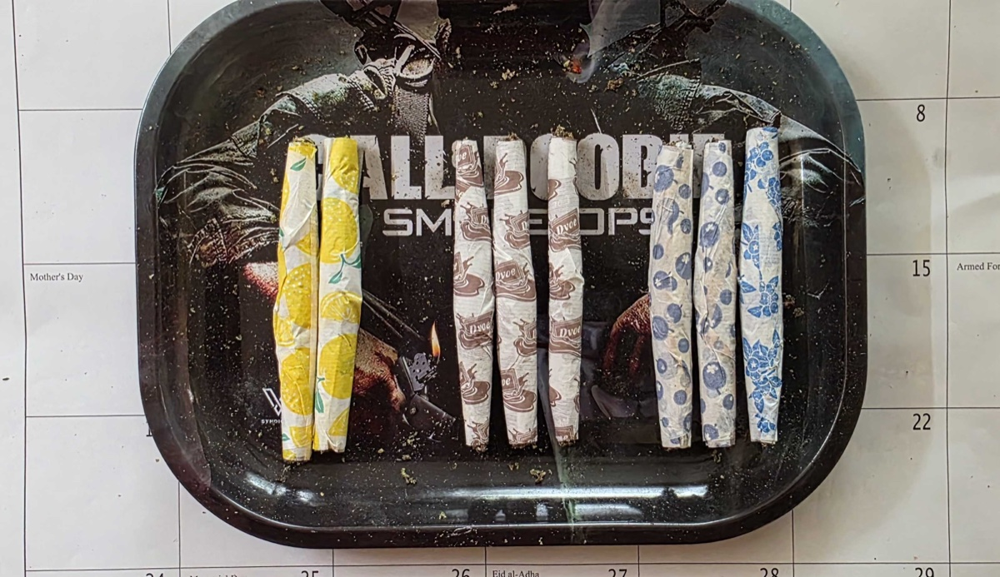

Memorial Day Cannabis Plan 2026: Three Strains, Three Joints
By Blazin Bill · Published May 23, 2026 · ~7 min read

Why a three-day weekend needs three strains
Smoke the same flower from Saturday breakfast through Monday night and by Sunday afternoon something flat happens. The terpenes you loved at 9 a.m. on Saturday feel one-note by Sunday at three. That’s not the weed—it’s the receptor side of the equation getting used to the same input. Rotation isn’t a luxury on a long weekend; it’s how you keep each session feeling like the first one.
The three-strain plan also matches what your day actually needs. Mornings want lift without anxiety. Cookout afternoons want sociable, not couch-locked. Nights, especially after grilling and a beer or two, want the kind of body weight that turns the hammock into a decision you don’t have to make. One strain can’t do all three. Three can.
Yellow papers — Pineapple Fruz for the morning
Breeder: Seed Junky Genetics. Lineage: Animal Mints Bx1 × Zkittlez Bx1. Profile: sativa-dominant hybrid, syrupy pineapple-citrus nose with a kushy backbone.
Pineapple Fruz won awards for a reason. The nose hits you first—musky-sweet pineapple, mango, a touch of skunk underneath—and the effect tracks the smell. SeedFinder’s pedigree page and Leafly both flag it as sativa-leaning with creative, focused effects. What that translates to in practice: you can drink a cup of coffee, write a grocery list, and start prepping the brisket rub without that racy, jittery edge a pure sativa can deliver. It lifts without overcorrecting.
The yellow lemon-print papers in the photo were the visual cue we used so a half-awake Saturday morning couldn’t grab the wrong joint. Color-coding your rolling tray the night before is a small thing that pays back the first time someone hands you a joint at 8:30 a.m. and you accidentally take a Sunday-night drag.
Brown papers — Peninsula Gardens Runtz for the cookout
Breeder: Cookies Family lineage, cultivated by Peninsula Gardens. Lineage: Zkittlez × Gelato. Profile: sativa-dominant hybrid, candy-sweet terps, social-laugh-fest reputation.
We’ve written about Peninsula Gardens’ Runtz in detail before—it’s the strain that anchored our 4/20 night. For a Memorial Day cookout in particular, it’s the right call: the high stays social, the conversation stays light, and nothing about it makes you want to disappear into your phone. The brown chocolate-print papers in the photo aren’t a flavor add (the papers don’t materially change the smoke)—they’re the visual anchor for “this is the middle-of-the-day joint.”
If you’re mixing cannabis with grilling and beer, the order matters. Eat first, hydrate, then smoke. The food slows everything and gives you a longer, steadier curve. Smoking on an empty stomach with sun and beer is how you find yourself wanting a nap at 4 p.m. when the second wave of guests is showing up.
Blue papers — Purple Push Pop for the night
Breeder: Seed Junky Genetics. Lineage: (Ice Cream Cake × Sunset Sherb Bx1) × Jealousy F2. Profile: indica-dominant, grape-and-cream nose, layered euphoric-then-body high. THC typically 22–30% depending on cultivator.
Purple Push Pop is the “put yourself to bed” strain in this rotation. The Seed Junky pedigree reads like a greatest-hits list: Ice Cream Cake brings the dessert-creamy backbone, Sunset Sherb brings sweetness, Jealousy adds the modern punch. The arc is what matters here—it starts as a head-up euphoria and migrates into the kind of body relaxation that doesn’t politely ask if you’d like to go to bed; it makes the decision for you.
Dosing caveat: at 22–30% THC, a half-joint of Purple Push Pop is plenty for most people on day three. If you smoked an indica every night of the long weekend and your tolerance is climbing, the third night’s joint will hit harder than the first, not weaker. Save the second half for Tuesday or share it.
A short note on what the day actually is
Memorial Day isn’t cannabis-themed. It’s a remembrance for U.S. military service members who died in service. Plenty of those service members became veterans who came home and found cannabis was the thing that finally got them sleeping, or eating, or off pharmaceuticals that weren’t working. The VA’s own page on cannabis acknowledges the use, even though federal law keeps the VA from prescribing it. If you light a joint this weekend, pour out a small thought for the people who can’t.
Pacing tips for a three-day weekend
- Pre-roll the night before. Sorting strains and rolling papers at 11 p.m. on Friday is a much better experience than scrambling at 9 a.m. Saturday. The photo above is what that looks like in practice.
- Water between sessions. Cottonmouth on day three is largely a hydration debt from day one. A 32-oz bottle by your chair is the difference between feeling good Monday morning and feeling like you’ve been beaten with a felt mallet.
- Eat before each session. Especially with the indica at night—an empty stomach plus 22%+ THC turns a pleasant body buzz into a heavy thud.
- The 90-minute rule for edibles. If anyone’s subbing in a gummy or a brownie, the rule is one piece and ninety minutes before considering a second. We wrote a whole post on why people overdose on edibles and the math that prevents it. Read it before you bake.
- If you’re driving Monday, stop Sunday afternoon. THC metabolites linger. State laws vary; the safe move is to leave a window.
The papers themselves, briefly
The yellow lemon, brown chocolate, and blue blueberry papers in the photo are flavored hemp papers. They look great in a photo. They smell pleasant before you light them. In the actual smoke, they contribute almost nothing—flavored papers don’t survive the burn intact, and what you taste is overwhelmingly the strain. So if you’re paying a premium for novelty papers because you think they’ll change the flavor of the flower, save your money. If you’re using them, like we did, as a visual sorting system for which joint goes with which time of day—that’s a legitimately useful job. Color before flavor.
Quick FAQ
What’s the best strain for wake-and-bake on a long weekend?
Sativa-leaning hybrids with citrus or tropical terpene profiles work well because they lift mood without the racy edge of pure sativas. Seed Junky Genetics’ Pineapple Fruz (Animal Mints Bx1 × Zkittlez Bx1) is a strong example — energizing and creative without flattening daytime drive.
Why use three different strains across the weekend?
Tolerance builds fast on a single strain. Rotating sativa-leaning in the morning, balanced hybrid mid-day, and indica at night uses each strain when its terpene and cannabinoid profile actually fits the activity — and prevents the day-two flat feeling that comes from smoking the same flower for three days straight.
Is Purple Push Pop good for sleep?
Purple Push Pop is an indica-dominant strain from Seed Junky Genetics ((Ice Cream Cake × Sunset Sherb Bx1) × Jealousy F2). The progression typical of this strain is euphoric mental uplift followed by strong body relaxation, which is the pattern most people describe as “help me sleep.” Effects vary by individual; start with a small amount.
If you want to read more before the weekend
Three companion pieces for this rotation: our full tasting notes on Peninsula Gardens Runtz, the buyer’s guide to dry-herb vaporizers (a vape session beats a joint when the wind is blowing on the deck), and The Nose Knows, on what the terpene profile of a jar is actually telling you before you commit a dispensary trip to it.